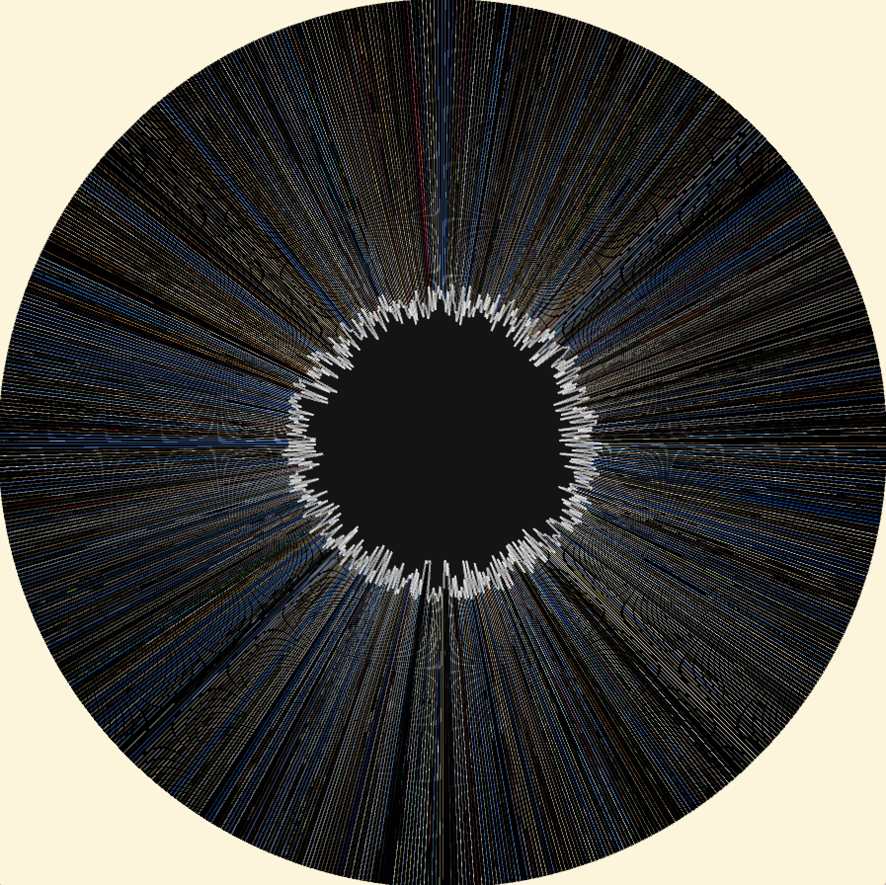

Eye of Memories
Fall 2022
Interactive and Generative Photo Collage Inspired from Iris Paintings by Ulla Wiggen
Creative Algorithms Weekly Project
Processing
Inspiration
I went on a 3-week-long trip to Europe last summer, and saw Iris Paintings (2016~) by Ulla Wiggen at the central pavillion Arte Biennale 2022. I liked the work and wanted to make some photo collage that resembled human eye structure.
Description
Upon launching the program, user will see an eye-shaped collage of slit-scanned first pixels of 720 images I took in Europe.
Users can:
- Scroll the mouse wheel to make the pupil bigger, exposing the collage layer. Increasing the pupil size will also make the slit-scanned lines thicker.
- Click anywhere to make a collage of the pictures in the areas behind the pupil. The images used for this iteration of collage will be near the ones the user is hovering the mouse on. Waiting for two seconds will do the same job.
- Whenever the collage is made, earlier ones will become more blur. No matter how hard we try to memorize a certain time, how good or bad they were, the memories eventually fade away.
App is operated by using mouseX, mouseY, and mouseWheel(). Also, pressing S Key saves the current image.
You can see the demo, pdf documentation and source files below ⬇️